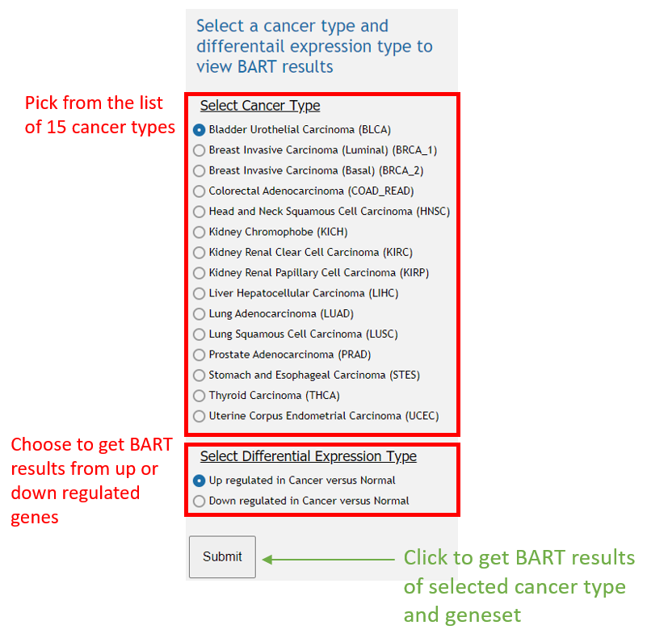

Citations
If you use BART Cancer in your data analysis or publish the results of BART Cancer, please cite the following papers in the main text of your manuscript:
- Wang, Z., Civelek, M., Miller, C. L., Sheffield, N. C., Guertin, M. J., & Zang, C. (2018). BART: A transcription factor prediction tool with query gene sets or epigenomic profiles. Bioinformatics, 34(16), 2867-2869. https://academic.oup.com/bioinformatics/article/34/16/2867/4956015
- Mei, S., Meyer, C. A., Zheng, R., Qin, Q., Wu, Q., Jiang, P., Li, B., Shi, X., Wang, B., Fan, J., Shih, C., Brown, M., Zang, C., & Liu, X. S. (2017). Cistrome Cancer: A web resource for integrative gene regulation modeling in cancer. Cancer Research, 77(21), e19-e22. https://www.ncbi.nlm.nih.gov/pmc/articles/PMC5826647/
Manual
BART Results Submission Form
The submission form to get BART results includes two selection menus. The first asks you to select a cancer type providing both common name and acronym. The second asks to select the gene set BART was run on. For each cancer, there are two BART results. One for the upregulated genes in that cancer compared to corresponding normal, and one for the downregulated genes in that cancer compared to corresponding normal. Once these two are selected, click submit to get the BART results.
How to interpret the BART result
The primary BART result is displayed as a table with the following columns:
- TR: Name of transcriptonal regulator
- Wilcoxon test statistic: Wilcoxon rank-sum test comparing the set of association score from one TF with all the association scores. The higher the test score is, the more likely the TF regulates the input.
- Wilcoxon P-value: One-sided P-value of the Wilcoxon rank-sum test. The smaller the p-value is, the more significant the TF regulates the input.
- Z-score: Z-score indicates the deviation of the TF's Wilcoxon test score from its background model, which is generated from MSigDB gene sets and H3K27ac profiles. The background model contains the Wilcoson test score for each TF and each profile.
- Max AUC: Maximum assocation score of each TF in its datasets indication the specific binding pattern of on dataset has the highest correlatin with the input.
- Relative Rank: Rank indicating average between Wicoxon P-value, Z-score, and maximum association score and then dividing the absolute rank by the total number of TFs.
- Irwin-Hall P-value: Indicates the rank significance. Irwin-Hall describes the probability distribution for a random variable define as the sum of a number of independent random variables, each having uniform distribution. The smaller the P-value is, the more significant the rank is.
Other output data files are also available for download.
- Differentially Expressed Genes: Provides list of selected differentially expressed genes used as input for BART to get the given result.
- Adaptive Lasso File: Provides regression information that tells which representative H3K27ac samples are selected along with coefficients through adaptive lasso regression and sample annotations including cell line, cell type or tissue type.
- AUC File: Provides the association score of each TR ChIP-seq dataset with the genome cis-regulatory profile.
Transcriptional Regulator Plots
Below the BART Results section, you will find a list of transcriptional regulators and corresponding plots. These display various TR specific data in bubble plot, violin plot, and bar chart form. To view different plots, click the name of the TR from the chart to the left of the plots. Note that likelihood scores for every TR are not available, when selected the plots using that data will display "N.A." or will have altered axes to reflect the lack of data.
- Bubble Plot
This bubble plot combines information from BART rank, Cistrome Cancer's likelihood ratio, and expression level. Each cancer type is plotted on a 1 - relative rank vs likelihood ratio axis so that the top right quadrant contains those cancer types in which the transcriptional regulator ranked high in likelihood and high in BART rank. The size of the bubble corresponds to its relative expression level using log(FPKM + 0.1) with the highest rank (1) being the largest bubble, and the lowest rank (15) being the smallest bubble.
If the likelihood ratio was not available from Cistrome Cancer, the bubbles were plotted just on the rank axis such that the higher bubbles correspond to high BART rank.
- Expression Level
This plot displays the distribution of the expression level of each transcriptional regulator in each of the cancer types. These violin plots were generated using the TCGA expression of log(FPKM + 0.1).
- BART Rank
The BART Rank plot displays the transcriptional regulator's rank across all cancer types. They are displayed as 1 - Relative Rank so that higher bars correspond to better predictions.
- Likelihood Ratio
This plot displays the likelihood ratio of the transcriptional regulator from Cistrome Cancer. Note that there are far fewer transcriptional regulators included in Cistrome Cancer compared to BART Cancer.
Results Process
Patient samples were taken from all cancer types from The Cancer Genome Atlas Program (TCGA).
Samples were then clustered based on their expression profiles (log2 of FPKM, with pseudo-count 0.1) using k-means clustering (n=31). The image below shows the results of the clustering and cancer types were re annotated by their cluster.

Some TCGA cancers had similar expression profiles and were re-clustered as one cancer. Colon adenocarcinoma (COAD) clustered with Rectum adenocarcinoma (READ) to form colorectal adenocarcinoma (COAD_READ). Stomach adenocarcinoma (STAD) clustered with Esophageal carcinoma (ESCA) to form Stomach and Esophageal carcinoma (STES). Additionally, BRCA was separated into two subtypes. The cluster containing 833 samples has been labeled as BRCA_1, for mainly luminal breast cancer (764 in 833 are luminal), and the cluster with 234 samples has been labeled as BRCA_2, for mainly basal breast cancer (176 in 234 are basal). Cancer types that had corresponding normal samples (15 cancer types as indicated by black boxes) were then used to determine differentially expressed genes using DESeq2. Differentially expressed genes were defined as those with adjusted p–value < 1e-7 and log2(Fold Change) greater than 1 for upregulated genes and less than -1 for downregulated genes. The differentially expressed genes (both up and down) were used as input to BART to predict functional transcriptional regulators in each cancer type.
In order to double-check the identification of differentially expressed genes, Venn diagrams were drawn to compare the number of upregulated genes from the Cistrome Cancer project and the newly identified upregulated genes as seen below (blue is Cistrome Cancer upregulated genes and green is newly identified upregulated genes).